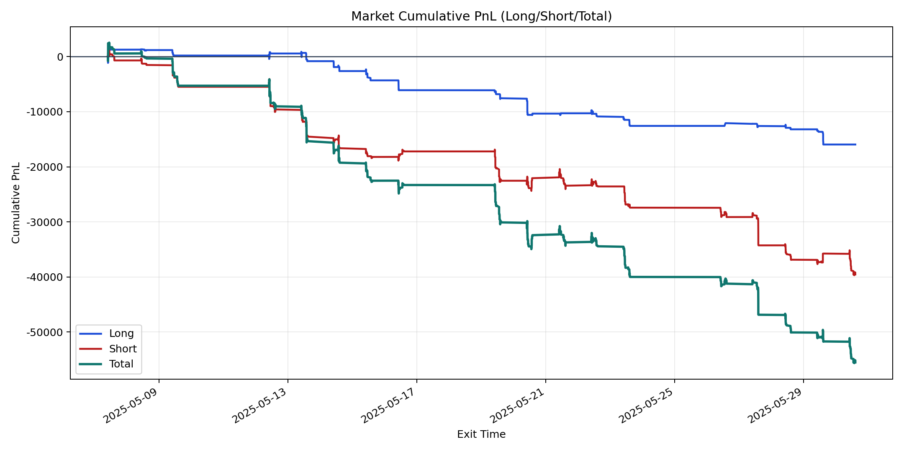
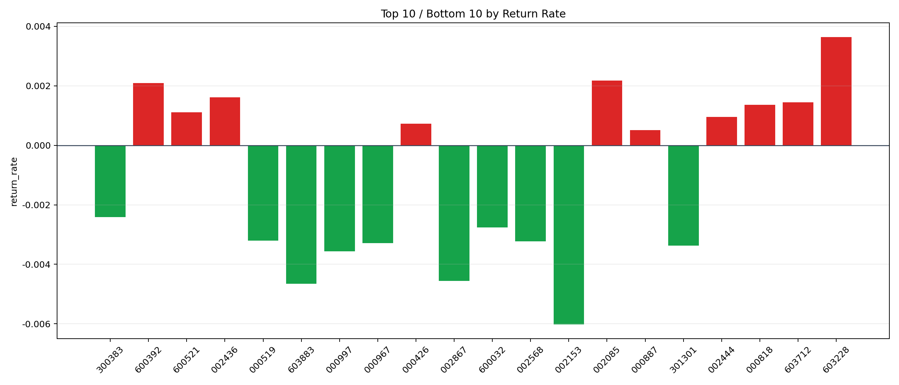

| repo_root | /home/haoranyou/data/output/dynamic_AUM_TAKER_index500 |
|---|---|
| period_months | 1 |
| period_label | 2025-05-07_to_2025-05-30 |
| start_time | 2025-05-07 09:45:52 |
| end_time | 2025-05-30 14:31:47 |
| n_trades | 2606 |
| n_symbols | 46 |
| total_pnl | -55490.94980000003 |
| long_total_pnl | -15953.303049999646 |
| short_total_pnl | -39537.64675000039 |
| total_entry_notional | 46751502.0 |
| long_entry_notional | 12187922.0 |
| short_entry_notional | 34563580.0 |
| total_return_rate | -0.0011869340540117841 |
| long_return_rate | -0.0013089436451923179 |
| short_return_rate | -0.0011439106351251922 |
| top_symbols_by_return | ["603228", "002085", "600392", "002436", "603712", "000818", "600521", "002444", "000426", "000887"] |
| bottom_symbols_by_return | ["002153", "603883", "002867", "000997", "301301", "000967", "002568", "000519", "600032", "300383"] |

